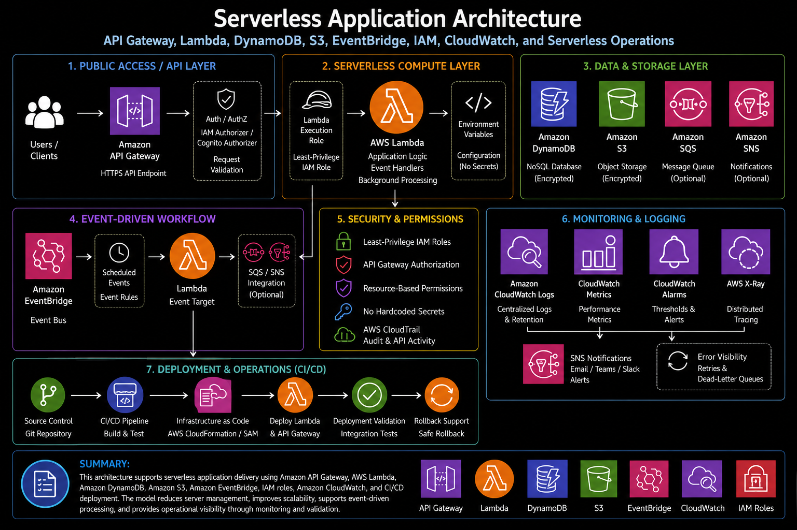

Project Documentation
Serverless Application Architecture
This project documents a serverless application architecture built around managed AWS services. The work focused on designing and operating an event-driven application pattern using AWS Lambda, API Gateway, DynamoDB, S3, EventBridge, SNS, SQS, IAM roles, CloudWatch Logs, CloudWatch metrics, tracing concepts, environment variables, Parameter Store or Secrets Manager, CI/CD deployment, error handling, retry behavior, dead-letter queues, validation, and operational runbooks.

Overview
This project documents a serverless application architecture built around managed AWS services. The work focused on designing and operating an event-driven application pattern using AWS Lambda, API Gateway, DynamoDB, S3, EventBridge, SNS, SQS, IAM roles, CloudWatch Logs, CloudWatch metrics, tracing concepts, environment variables, Parameter Store or Secrets Manager, CI/CD deployment, error handling, retry behavior, dead-letter queues, validation, and operational runbooks.
The goal of the architecture was to reduce server management while still maintaining production support readiness. Serverless applications remove the need to manage operating systems and long-running servers, but they still require strong design around permissions, observability, event flow, error handling, deployments, configuration management, and troubleshooting. This project focused on those operational details so the application could be scalable, supportable, and easier to maintain.
Background
Traditional application hosting often requires managing servers, patching operating systems, monitoring disk usage, maintaining web services, and scaling infrastructure manually or through auto scaling groups. Serverless architecture changes that operating model by shifting compute execution to AWS Lambda and using managed services for API access, data storage, object storage, messaging, scheduling, and event routing.
Even though serverless reduces infrastructure management, it does not remove operational responsibility. Lambda functions still need clear IAM permissions, safe configuration handling, deployment controls, logging, metrics, retry behavior, and failure handling. API Gateway routes still need authorization, throttling awareness, and request validation. DynamoDB tables need access patterns, capacity planning, backups, and error visibility. EventBridge, SNS, and SQS workflows need clear event ownership and predictable failure handling.
This project focused on building a practical serverless operating model where application components were loosely coupled, observable, and deployable through a controlled process. The architecture supported both synchronous API requests and asynchronous event-driven workflows.
Business Problem
The business problem was the need for a scalable application architecture without increasing the operational burden of managing servers. For workloads that run on events, API requests, background jobs, or scheduled tasks, maintaining always-on infrastructure can create unnecessary operational work. Servers must be patched, monitored, scaled, secured, and supported even when the application workload is intermittent.
Another challenge was operational visibility. Serverless systems can become difficult to troubleshoot if function logs, event sources, retries, queues, dead-letter queues, permissions, and API responses are not designed clearly. When an event fails, the team needs to know whether the issue came from the API layer, Lambda code, IAM permissions, DynamoDB access, S3 object handling, message delivery, retry exhaustion, or a downstream service dependency.
The platform need was to create a serverless architecture that improved scalability, reduced server management, supported event-driven processing, protected access through least-privilege IAM roles, and provided enough monitoring and logging for production support.
Architecture
The architecture used API Gateway as the public entry point for client or application requests. API Gateway routed HTTPS requests to Lambda functions, which handled application logic and interacted with backend services such as DynamoDB, S3, SNS, SQS, or other approved AWS services. IAM execution roles controlled what each Lambda function was allowed to access.
DynamoDB provided the primary NoSQL data layer for application records, lookup data, status tracking, or event state. S3 supported object storage for files, reports, application artifacts, or event payloads that did not belong directly in the database. EventBridge supported scheduled and event-driven workflows, such as recurring jobs, application events, or routing events to Lambda targets. SNS and SQS supported decoupled communication, notifications, buffering, retry handling, and downstream processing.
Configuration values were handled through environment variables, Systems Manager Parameter Store, or Secrets Manager, depending on sensitivity and application requirements. Non-sensitive runtime values could be passed as environment variables, while secrets and sensitive configuration could be stored in Secrets Manager or Parameter Store and retrieved through IAM-controlled access.
CloudWatch Logs and CloudWatch metrics provided operational visibility into function execution, errors, duration, throttles, API activity, queue depth, and alarm conditions. X-Ray or tracing concepts supported request path visibility across distributed components. Dead-letter queues and retry behavior were designed so failed events could be captured, reviewed, and reprocessed instead of disappearing silently.
What I Did
I supported the design and documentation of a serverless application pattern using Lambda, API Gateway, DynamoDB, S3, EventBridge, SNS, SQS, IAM, CloudWatch, configuration management, CI/CD deployment, and operational runbooks. The work focused on making the architecture scalable and supportable rather than simply connecting services together.
I reviewed how requests and events moved through the system, how Lambda functions were triggered, what permissions each function required, how data was stored, how errors were handled, and how the team would troubleshoot failures. This included thinking through synchronous API calls, asynchronous background processing, scheduled jobs, notification workflows, retry behavior, and dead-letter queue handling.
I also supported operational readiness by defining validation steps, logging expectations, alarm conditions, deployment checks, rollback considerations, and runbook guidance. The goal was to make sure the serverless application could be deployed, monitored, investigated, and supported in a production-style environment.
Implementation Details
1. API Gateway request handling
API Gateway provided the HTTPS entry point for client requests. Routes were mapped to Lambda integrations so application logic could run only when requests were received. API Gateway configuration needed to account for request routing, authorization, throttling behavior, error responses, and integration timeout limits. This helped create a clean separation between public access and backend application logic.
2. Lambda application logic
Lambda functions handled the core application processing. Each function was designed around a specific responsibility, such as handling an API request, processing an event, writing to DynamoDB, reading from S3, sending a notification, or running a scheduled task. Keeping functions focused made the workflow easier to troubleshoot and reduced the risk of broad permissions or unclear ownership.
3. IAM execution roles
IAM roles controlled what each Lambda function could access. Instead of using broad permissions, the architecture followed a least-privilege model where functions received access only to the tables, buckets, queues, topics, parameters, or secrets required for their purpose. This improved the security posture and made permissions easier to review during troubleshooting or audit review.
4. DynamoDB data layer
DynamoDB supported application data storage for records, status tracking, lookup data, or event state. Table design needed to consider access patterns, partition keys, sort keys, query behavior, error handling, and backup needs. Lambda functions accessed DynamoDB through IAM-controlled permissions, and CloudWatch metrics helped monitor errors, throttling, and capacity-related signals.
5. S3 object storage
S3 was used for object storage where files, reports, event payloads, or generated artifacts needed to be stored. Lambda functions could write to or read from specific buckets based on IAM permissions. S3 event notifications could also trigger downstream processing when new objects were created. This created a scalable storage layer without requiring server-based file management.
6. EventBridge scheduled and event-driven workflows
EventBridge supported scheduled jobs and event routing. Scheduled rules could trigger Lambda functions for recurring operational tasks, while event rules could route application or service events to the correct target. This helped create a clear event-driven workflow and reduced the need for always-running background servers.
7. SNS and SQS messaging
SNS and SQS supported decoupled communication between application components. SNS could publish notifications to subscribers, while SQS could buffer work for asynchronous processing. This helped protect the application from temporary downstream failures and allowed Lambda functions to process messages independently from the original request or event source.
8. Error handling and retry behavior
Error handling was a major part of the architecture. Synchronous API errors needed clear responses, while asynchronous event failures needed retry handling, visibility, and dead-letter queue support. Retry behavior was reviewed so failed events could be retried safely without causing duplicate processing, infinite loops, or silent data loss.
9. Dead-letter queues
Dead-letter queues provided a place for failed messages or events that could not be processed successfully after retries. This made failures visible and reviewable. Instead of losing failed events, the team could inspect the dead-letter queue, understand why processing failed, correct the issue, and reprocess messages where appropriate.
10. Configuration and secrets management
Environment variables were used for non-sensitive configuration values such as table names, bucket names, feature flags, or runtime settings. Sensitive values were stored in Systems Manager Parameter Store or Secrets Manager, with Lambda functions retrieving them through controlled IAM permissions. This reduced the risk of hardcoded secrets and made configuration changes easier to manage.
11. Monitoring, logging, and tracing
CloudWatch Logs captured Lambda execution logs, API activity, processing errors, and troubleshooting details. CloudWatch metrics supported visibility into errors, duration, throttles, invocations, queue depth, and alarm conditions. X-Ray or tracing concepts supported distributed request visibility, helping the team understand how a request or event moved across API Gateway, Lambda, DynamoDB, S3, SQS, SNS, and other services.
12. CI/CD deployment
The application was designed to support controlled deployment through source control and CI/CD. Deployment included packaging Lambda functions, updating infrastructure definitions, applying environment-specific configuration, publishing changes, and validating the deployed application. This created a safer release process than making manual updates directly in the console.
Validation
Validation began with confirming that each serverless component was deployed and reachable through the expected path. API Gateway routes needed to respond correctly, Lambda functions needed to execute successfully, IAM permissions needed to allow only the required actions, and backend services such as DynamoDB, S3, SNS, SQS, or EventBridge needed to receive and process requests as expected.
Functional validation focused on request and event behavior. API requests were tested to confirm expected responses, error handling, and backend updates. Scheduled EventBridge rules were checked to confirm that Lambda targets executed at the expected time. SQS and SNS workflows were validated by confirming that messages were published, received, processed, retried, or moved to a dead-letter queue when failures occurred.
Security validation focused on IAM roles and configuration handling. Each Lambda function needed the permissions required for its task without broad access to unrelated resources. Sensitive configuration needed to be stored in an approved secret or parameter service instead of being hardcoded in source code or exposed in logs.
Operational validation focused on observability. CloudWatch Logs needed to capture useful execution details, metrics needed to show invocation and error behavior, alarms needed to identify failure conditions, and tracing concepts needed to support troubleshooting across services. Validation was complete only when the team could operate and troubleshoot the application after deployment.
Operational Workflow
The operational workflow began with source control and deployment. Application code, infrastructure definitions, and configuration changes were reviewed, committed, built, and deployed through a controlled CI/CD process. After deployment, the application was validated through test API requests, event triggers, logs, metrics, and service-level checks.
For normal application operation, API Gateway received requests and routed them to Lambda functions. Lambda functions processed the request, accessed DynamoDB or S3 as needed, published events to SNS or SQS where appropriate, and returned a response or allowed asynchronous processing to continue. CloudWatch captured logs and metrics throughout the workflow.
For event-driven processing, EventBridge, S3 events, SNS, or SQS could trigger Lambda functions. Successful events were processed and logged. Failed events followed the configured retry behavior. If retries were exhausted, the event was moved to a dead-letter queue or surfaced through logs and alarms so it could be investigated.
For troubleshooting, the workflow moved through the application path step by step. The team reviewed API Gateway responses, Lambda logs, CloudWatch metrics, IAM permission errors, DynamoDB or S3 access issues, SQS queue depth, SNS delivery behavior, EventBridge rule matches, dead-letter queue contents, and tracing data where available. This structured approach made it easier to isolate whether a failure was caused by application logic, permissions, configuration, event delivery, data access, or downstream service behavior.
Outcome
The project improved scalability by using managed AWS services and event-driven execution instead of always-on servers. Lambda, API Gateway, DynamoDB, S3, EventBridge, SNS, and SQS allowed the application to respond to requests and events without requiring traditional server management, operating system patching, or manual capacity planning for web and worker nodes.
The work also improved operational visibility. By designing around CloudWatch Logs, CloudWatch metrics, alarms, tracing concepts, dead-letter queues, and structured error handling, the architecture gave support teams a clearer way to investigate failures and understand how events moved through the system.
The biggest operational value was production support readiness. The architecture included controlled deployment, least-privilege IAM, secure configuration handling, retry behavior, failure capture, validation steps, and runbook guidance. This made the serverless application easier to deploy, troubleshoot, and support over time.
What This Demonstrates
This project demonstrates practical serverless architecture and operations experience across AWS Lambda, API Gateway, DynamoDB, S3, EventBridge, SNS, SQS, IAM roles, CloudWatch Logs, CloudWatch metrics, X-Ray or tracing concepts, environment variables, Parameter Store, Secrets Manager, CI/CD deployment, error handling, retries, dead-letter queues, validation, monitoring, and operational runbooks.
It also demonstrates platform engineering judgment. Serverless architecture is not only about removing servers. It requires designing event flow, permissions, observability, configuration, deployment, retry behavior, failure handling, and support processes. This project shows how those components can be organized into a scalable and supportable AWS application model that reduces server management while improving operational readiness.